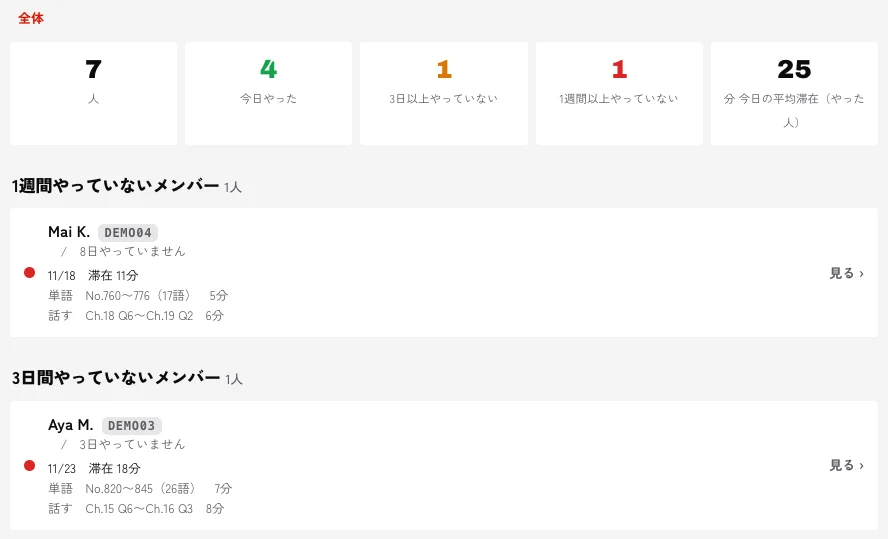
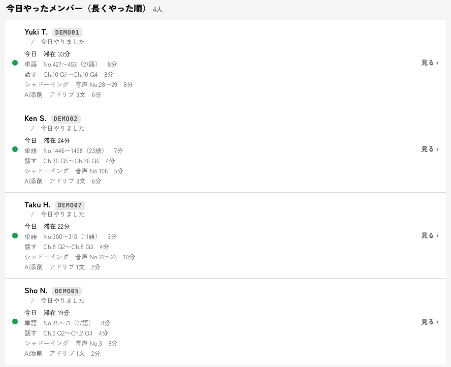
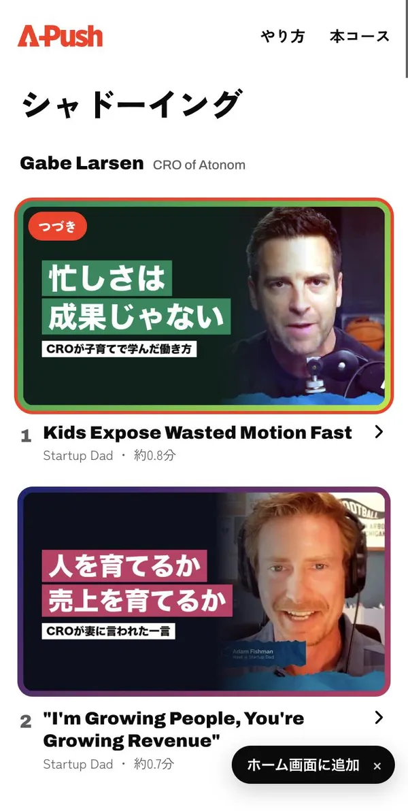
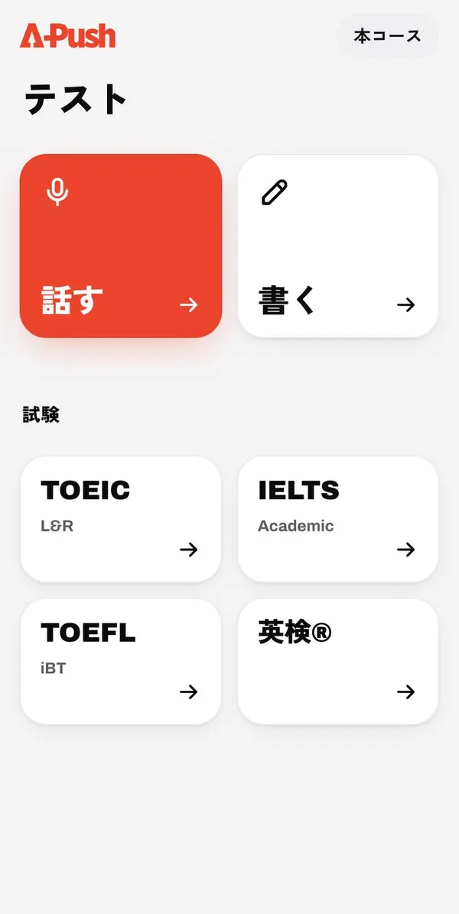

AI時代、英語で
世界が商談相手になる
話せると、ビジネスの
チャンスが広がる。
取引先も、投資家も、仲間も。
出会える相手が、世界中に広がります。
通訳を待たずに、その場で決められる。
英語が話せるメンバーがいる
会社を、想像してください。
商談が増えるかもしれない
つながりやすくなる
旅行任せられる場面が
広がっていく
本質的な英会話とは。
TOEIC の高得点で必要なのは、知識。
でも実際の仕事で必要なのは、
文化の理解と、コミュニケーション。
英語は、すでに頭の中にある。
英文の資料は読める。
メールも書ける。
単語も文法も、知っている。
でも、
出てこない。
なぜなら、
脳の外に出すトレーニングを
行っていないから。
足りないのは、
知識を出すこと。
会議で、とっさに言えない。
商談で、言いたいことが出てこない。
だから、口から出す練習をする。
だから私たちは、
アウトプットを
真剣に行う。
9割レッスンの約9割が、話す時間。
運動と、知識。
知識を溜め込むだけでは、凝り固まって
頭の中から出てこなくなる。
入れるのと同じくらい、出すことが大切。
弊社のサービスは、
貴社様専用で作成します。
単語帳を作成
英語トレーニング
3つのプラン。
マンツーマン毎回、話す
AIコーチが管理しながら、
シャドーイング＆
単語トレーニング。
メンバーが、いつ・何分・何を学習したか管理できる。
そして、AIコーチが常に管理し、
滞りのあるメンバーに電話する。
団体の英語力の伸びを、
確かめられる。
誰が・いつ・何分・どこまで。
人事・研修担当の方が見られます。

画面は見本です。
止まっているメンバーが、
すぐわかる。
3日・1週間やっていない人が、
上に出ます。

画面は見本です。
練習の記録は、本人が同意した時だけ送られます。
シャドーイングは、
ビジネスの動画で。
経営者が話す、本物の英語。
3回聞いて、まねて言う。
最後に、質問に答える。

単語も、
毎日トレーニング。
貴社の事業領域の単語帳で、
毎日、少しずつ覚える。

試験は、すべて
模擬テストで
練習できる。
英検®・TOEIC・
IELTS・TOEFL・VERSANT。
10分のトレーニングから、
パートごとの練習まで。

あなたのオフィスで、
マンツーマン。
講師がオフィスへ伺います。
または、目黒駅徒歩1分の
A-PUSH Office で。
1回50分。
講師は全員ネイティブ。
コーチが、
研修のあいだ、伴走する。
目標と進め方を、
一緒に決める。
LINE で報告と PUSH。
内容と回数は、
団体に合わせて決めます。
ご希望をうかがって、
一緒に決めます。
ビジネスコース
AI時代、英語で
世界が商談相手になる

交渉の場で、
意見をはっきり伝えられる。
そして、相手の国の文化を学ぶ。
カリキュラム（全41章）
- 会議を進める
- 報告会を進める
- 謝罪をする
- 問題と解決
- 可能性とリスク
- 目標と計画
- 仕事の流れ
- 海外の取引先と初めて会う
- 会社を紹介して信頼を得る
- 雑談で距離を縮める
- 電話・オンライン会議で聞き返す・確かめる
- 本部に進み具合を報告する
- 数字を比べて話す
- 本部に目標未達を説明する
- 本部に予算・人・承認をお願いする
- 本部の決定を伝える・押し返す
- 提案して相手を動かす
- 選択肢を示して選ばせる
- 質問で相手の本音を聞き出す
- 相手の反論に答える
- 最初の条件を出す
- 交換条件で譲る
- 条件をしぼる
- 仮の提案で相手を探る
- 納期と生産量を交渉する
- 支払い条件と契約の中身を詰める
- 価格だけでなく全体で交渉する
- ていねいに反対する
- 断って代わりを出す
- 大事な点を強める
- 圧力をかわす
- 引き下がる選択肢を見せる
- 行き詰まりを破る
- 合意をその場で口頭で確認する
- 取引先と問題の原因を探る
- 取れなかった案件を振り返る
- 契約の見直し・再交渉
- 国際会議を回す
- 任せる・手配する
- 日本の商習慣を説明する
- 総まとめ：交渉をひと通り
1つの章は、3つのステップ。
ビジネスの型を、
ネイティブと一緒に覚える。
単語をもとに、
自分で文を考えて伝える。
文章を読んで、
指示・説明・交渉をする。
ビジネス英語を、
マンツーマンで。
コーチングつき。
VERSANT を2回受験（受験料は会社負担）。
学習ダッシュボードで進み具合を確認。
受講期間は1ヶ月。